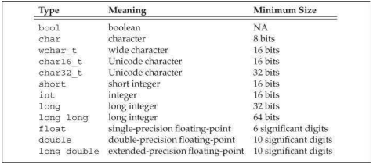
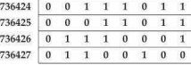

C++ 기초
산술 타입은 둘로 나뉜다. (문자와 불 타입을 포함하는) 정수 타입과 부동소수점 타입이 그것이다.
산술 타입의 크기, 즉 비트의 수는 장치에 따라 다르다. 표준은 표 2.1에서 제시하는 것과 같은 최소 크기를 보장한다. 하지만 컴파일러는 이들 타입을 위해 더 큰 크기를 허용한다. 비트 수가 차이를 보이기에, 타입으로 표현할 수 있는 최대 (또는 최소) 크기 또한 차이를 보인다.
표 2.1. C++: 산술 타입

bool 타입은 true와 false의 진리값을 표현한다.
여러 문자 타입이 있는데, 대부분 국제화를 위한 것이다.기본적인 문자 타입은 char이다. char는 장치의 기본적인 문자 집합 속 문자에 대응하는 수치적 값을 취하기 충분할 만큼 크도록 보장된다. 즉 char는 단일 기계 바이트와 같은 크기다.
wchar_t, char16_t, char32_t와 같은 다른 문자 타입은 확장된 문자 집합을 위해 쓰인다. wchar_t 타입은 장치의 가장 넓게 확장된 문자 집합 속의 아무 문자라도 취할 수 있을 만큼 클 것이 보장된다. char16_t와 char32_t는 유니코드 문자를 위한 것이다. (유니코드는 사실상 모든 자연어에서 쓰이는 문자를 표현하기 위한 표준이다.)
내장형 타입의 기계 수준 표현
컴퓨터는 데이터를 일련의 비트로 저장한다. 비트는 각각 0 또는 1을 취한다. 가령
00011011011100010110010000111011 …
대다수 컴퓨터는 메모리를 2의 거듭제곱인 크기의 비트 덩어리로 다룬다. 조회할 수 있는 가장 작은 덩어리는 “바이트”라고 불린다. 주로 적은 수의 바이트에 해당하는 저장의 기본 단위는 “워드”라고 불린다. C++에서 바이트는 적어도 기계의 기본적인 문자 집합 속 문자를 취하기 위해 필요한 비트만큼은 갖는다. 대다수 기계에서 바이트는 8 비트를 포함하며 워드는 32 또는 64 비트인데, 이는 4 또는 8 바이트다.
대다수 컴퓨터는 메모리상의 각 바이트에 (“주소”라고 불리는) 수를 하나 연관시킨다. 8비트 바이트와 32 비트 워드로 구성되는 기계에서, 우리는 메모리의 워드 하나를 다음처럼 볼 수 있다.

여기서 바이트의 주소는 왼쪽에 있다. 주소 다음에는 8 비트의 바이트가 이어진다.
우리는 그 주소에서 시작하는 다양한 크기의 비트 모음 여러 개 가운데 하나를 가리키기 위해 주소를 사용할 수 있다. 주소 736424의 워드, 주소 736427의 바이트라고 말하는 것이 가능하다. 주어진 주소상의 메모리에 의미를 부여하기 위해서는, 거기 저장된 값의 타입을 알아야 한다. 타입은 얼마나 많은 비트가 쓰였으며 이들 비트를 어떻게 해석할 수 있는지 결정한다.
736424의 객체가 float 타입이고 이 기계에서 float가 32 비트로 저장된다면, 우리는 그 주소의 객체가 워드를 통째로 아우른다는 것을 알 수 있다. float의 값은 기계가 부동소수점 수를 저장하는 방법상의 세부사항에 의존한다. 대안적으로, 736424의 객체가 ISO-Latin-1 문자 집합을 사용하는 기계상의 unsigned char라면, 그 주소에서 바이트는 세미콜론을 나타낸다.
부동소수점 타입은 단일의, 이중의, 확장된 정밀도의 값을 표현한다. 표준은 최소한의 유효 자릿수를 특정한다. 대다수의 컴파일러는 명세된 최소 기준을 능가하는 정밀도를 제공한다. 특히 float는 하나의 워드(32 비트), double은 두 워드(64 비트), long double은 셋 또는 네 워드(96 또는 128 비트)로 표현된다. float와 double 타입은 7에서 16 유효자릿수를 갖는다. long double 타입은 주로 특수 목적 부동소수점 하드웨어에 쓰이며, 그 정밀도는 구현에 따라 다르다.
부호 있는 타입과 부호 없는 타입
bool과 여타 확장된 문자 타입을 제외하면, 정수 타입은 부호가 있거나(signed) 부호가 없다(unsigned). 부호가 있는 타입은 음수나 (0을 포함해) 양수를 표현한다. 부호 없는 타입은 오직 0 이상의 값만 표현한다.
int, short, long, long long 타입 모두 부호가 있다. 여기 unsigned라고 덧붙이면 대응하는 부호 없는 타입이 된다. unsigned int 같은 경우 unsigned라고 단순하게 요약될 수 있다.
다른 정수 타입과 다르게 char, signed char, unsigned char는 특수하다. 특히 char는 signed char와 같은 타입이 아니다. 세 가지 타입이 있지만, 오직 두 가지 표현만이 있을 따름이다. 부호가 있는 것과 부호가 없는 것이다. (일반적인) char 타입은 이들 두 표현 가운데 하나를 사용한다. 나머지 두 문자 타입이 어떤 표현법을 사용하는지는 컴파일러가 char에 허락하는 표현법에 의존한다.
부호가 없는 타입에서는 모든 비트가 값을 표현한다. 가령 8 비트 unsigned char는 0에서 255까지 값을 취할 수 있다.
표준은 부호가 있는 타입이 어떻게 표현되는지 정의하지 않았다. 하지만 양수 값과 음수 값의 범위가 공평하게 나뉘어야 한다는 점은 특정한다. 따라서 8비트 signed char는 -127에서 128까지 값을 취할 수 있도록 보장된다. 대다수 현대적 기계는 -128에서 127까지의 값을 취할 수 있도록 허락한다.
조건: 이용 타입 결정
C++는 C와 마찬가지로 필요한 경우 프로그래머가 하드웨어에 근접할 수 있도록 설계되었다. 연산 타입은 다양한 유형의 하드웨어를 길들일 수 있도록 정의되었다. 이에 따라 C++의 연산 타입들이 혼란스러울 수 있다. 대다수 프로그래머는 사용 타입을 제한하여 이런 복잡성을 무시할 수 있(으며 무시해야 한)다. 사용 타입 결정에 있어 유용할 수 있는 조언 몇 가지를 덧붙인다.
- 값이 음수가 될 수 없다는 사실을 알 때면 부호 없는 타입을 사용할 것.
- 정수 연산에는 int를 사용할 것. short는 주로 너무 작고 실상 long은 종종 int와 같은 크기다. 데이터값이 int가 최소한으로 보장하는 것보다 크다면, long long을 사용할 것.
- 연산 표현식에 char 또는 bool을 그냥 사용하지 말 것. 오직 문자 또는 진리값 표현에만 사용할 것. char를 이용한 계산은 특히 문제적인데 왜냐하면 char의 부호 표기 여부는 기계에 따라 다르기 때문이다. 작은 정수가 필요하다면, 부호 표기 여부를 명시할 것.
- 부동소수점 계산에는 double을 사용할 것. float의 정밀도는 주로 충분하지 못하고, float 사용 비용에 비해 double 사용 비용이 더 큰 것도 아니다. 실상, 어떤 장치에서는 double이 더 빠르다. 한편 long double은 보통 쓸 일이 없으며 비용도 만만치 않다.
연습문제 2.1.1
연습문제 2.1 int, long, long long, short 간의 차이는 무엇인가? 부호 있는 타입과 부호 없는 타입 간의 차이는 무엇인가? float와 double 간의 차이는 무엇인가?
연습문제 2.2 주택담보대출 월납입액을 계산하려면, 이율, 원금, 월납입액 계산에 각각 어떤 타입을 쓰겠는가? 타입 선정 이유 또한 설명할 것.
C++ Primer 5th Edition
(Lippman, Lajoie, Moo)
번역 김태원